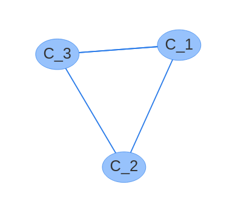
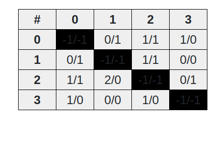
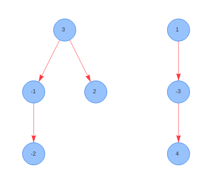
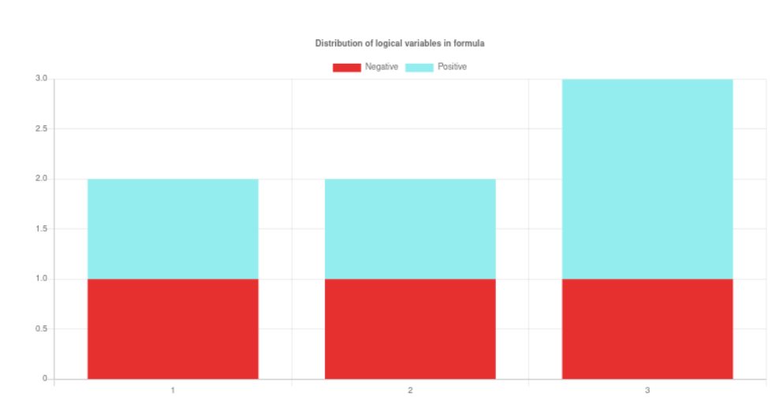

Logical formula visualization system
created at AGH UST in Kraków, Poland.
Hello there! The purpose of this page is to present all of the possibilities of this website.
All contributors hope that you will find this project useful and entertaining in the context of resolving SAT or
MAX-SAT. Our main goal is to provide a logical formulas visualization service that may help in choosing the most
adequate SAT-SOLVER algorithm. We believe that the visualization of a logical formula may be one of the most
efficient ways of understanding the problem which the formula encodes. The authors are planning to upgrade the
project regularly with new methods of visualization and with improving the quality of this service.
Dimacs
All of the visualizations are generated using Dimacs CNF format. You cannot upload other files to the
website - they will not be accepted by our server. You may find more information about this format on
this website. To present the results of
available
visualizations we'll be using a simple Dimacs file which is presented and explained below.
p cnf 4 3
-1 -2 3 0
2 3 0
1 -3 4 0
The first line of this file contains general information about the formula it represents. It means it's in cnf form
and it has 4 variables and 3 clauses. The clauses are represented by all the other lines in the file and the numbers
represent the number of each variable. The formula in file could be translated as:
To generate the visualization you must have SAT or MAX-SAT formula written and saved in Dimacs format. Firstly you
have to
upload this file in a proper subpage (sat or maxsat). Please note that application would not accept a file with
mistakes
- if you have a problem with uploading the file it is most likely caused by mistakes in Dimacs file. Secondly you
click
'visualize' bottom and choose your desired visualization format. By clicking buttons with visualization name you are
scheduling the calculations which are done in the background on our server. To see the generated visualizations you
have
to move to 'Visualizations' page available from the navigation bar. Unless the formula is very small (up to ~5000
variables
and/or clauses) you will have to wait for the results. You can check the progress of the calculations by clicking
the
'Check progress' button. When the calculations are done you can see, that 'Check progress' button changed to
'Visualize'.
After clicking that you will be finally moved to a page, where you can see the visualization.
Factor graph
Factor graph is a type of a graph, where collection of vertices (V)
is representing all the variables (X) and clauses (C). Mathematically we could write that V = X ∪ C,
where X
represents the collection of formula variables and C represents the collection of formula clauses. The edges are
built
between clauses and variables to represent the presence of variable in clauses represented by their vertices. If
variable is in positive form the edge is green, in other case (negative form) its color is red. Lets move on to an
example to clarify the appearance of Factor Graph. We'll be using Dimacs file presented and explained before.
Image no. 1: Factor Graph
Interaction graph
Variable interaction graph is a graph, where collection of vertices (V) is representing all the variables (X) in
given formula. It could be expressed by mathematical expression V = X. The edges (E) stand as the
representation of presence of both variables in a particular formula. In other words: if two variables are both
present in any clause in formula the connection between them is made by connecting vertices representing these two
variables with an edge. Below you can see interaction graph created for previously described Dimacs file.
Image no. 2: Interaction Graph
Resolution graph
Resolution graph is a graph, where the collection of vertices (V) is equal to the collection of clauses (C) in a
given formula which could be expressed as V = C. The edges are connecting two vertices only when there is a variable
(x) that belongs to formula ( x ∈ X ) and it appears in both clauses in opposite form ( x ∈ C1 && ¬x ∈ C2 ). Below
you can see a graph generated for previously presented Dimacs file.

Image no. 3: Resolution Graph
Matrix visualization
Matrix visualization is a simple method, where rows and columns are representing each variable of the formula. Each
field of a matrix provides information if and how two variables are connected in formula clauses. In 'Mode 0' all
the fields marked with 'x' serve as a sign of two variables being present simultaneously in one or more number of
clauses. 'Mode 1' is referring to the form of the variable in column. Sign in the matrix field means
that variable in a column appears at least once with variable in a row having a not negated form (plus sign),
negated form (minus sign) or both forms (plus/minus signs). 'Mode 2' works similarly to 'Mode 1', however it also
counts
the number of clauses with specified forms. F.e. 1/0 means that variable in a column is present
simultaneously
with variable in a row once as a non negated form and zero times as negated form. Below you may see Matrix
Visualization of Dimacs file described before.

Image no. 4: Matrix Visualization
Tree visualization
Tree visualization is a tree representation of a formula. Each node of a tree represents a variable. The root of a
tree is chosen by finding the most common variable in a formula. Then it's eliminated from all of the clauses and
connected with
children according to the following algorithm: pick the most common variable among the other variables, add it to a
tree,
eliminate all the clauses that contain this variable. This algorithm is being repeated until all the clauses are
eliminated. Then the whole algorithm is done for all the chosen children of parent node until the number of
nodes equals number
of variables. This is demonstrated by following example generated with Dimacs file presented in one of the sections
before.

Image no. 5: Tree Visualization
Cluster Graph
Cluster Graph is an extension for Interaction Graph which was presented before. While watching this Graph it is
possible to
point out the structures in it, which stand out with greater quantity of connections between vertices (in other
words: they
are more dense). By taking this structures into account we may select clusters which may replace the
part of the graph that they represent. The main factor of this cluster selection in ForVis is chosen
automatically. As a result you may see a minimized interaction graph grouped with selected clusters as presented
below with Dimacs file mentioned before.
Image no. 6: Cluster Graph
Distribution Chart
Last, but not least - Distribution Chart. It is a simple bar chart where you may find quantity of variables in your
formula. On the x axis you will find the number of variable, while y axis represents total number of appearances.
Column marked with red color means the quantity of variable in negated form, and blue color represents the same with
non negated form. You may
filter this chart to see only quantity of negated forms, positive forms, both of them as a stacked bar chart or
limit
chart to only display variables that exist in formula only in one form. You can also limit the results to desired
percentage of best results. The example generated by presented before Dimacs file is available below.

Image no. 7: Distribution Chart